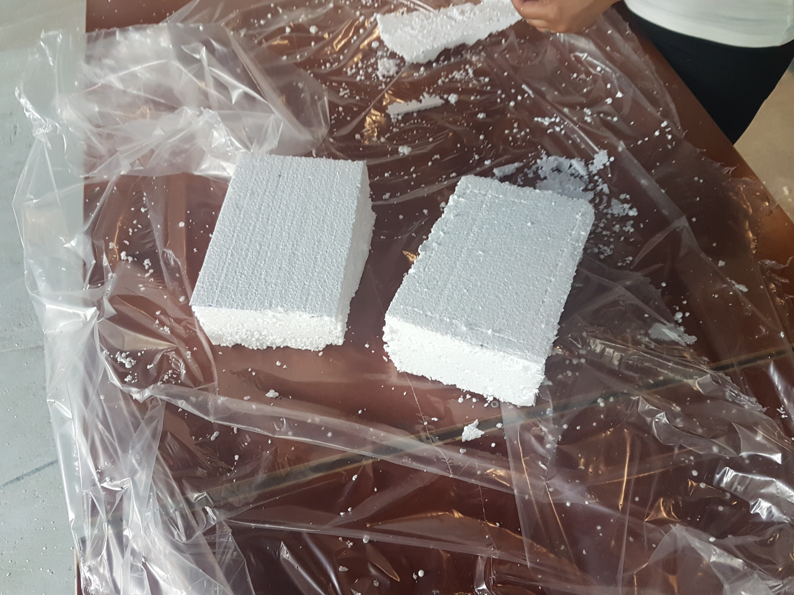
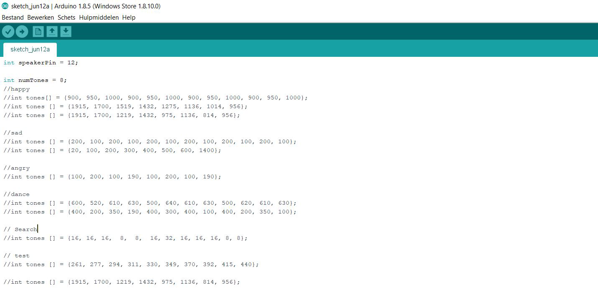

Plant pot dat op bluetooth muziek kan afspelen

Vandaag was de start van de HCI weken. Tijdens een gezamenlijke start hebben we een intro praatje gekregen, waarna de groepen bekend werden gemaakt. Ik ben ingedeeld in een groepje met twee andere CMD’ers en twee studenten van de UX klas. Eerst hebben wij kennis gemaakt met elkaar en onze sterke punten besproken. Na het kennismaken zijn we begonnen met het maken van een scrumboard om een planning bij te houden. Daarna zijn we gaan brainstormen voor een leuk project, iets wat we allemaal belangrijk vonden. Via post its hebben wij allerlei ideeën verzameld en deze uiteindelijk met elkaar besproken. Brainstormen vind ik altijd interessant om te doen en ik kwam al snel met een aantal ideeën. Een teamgenoot had het idee om iets met planten te doen. Dit idee werd enthousiast door de rest van de groep ontvangen en hierop zijn we meer ideeën gaan bedenken. Het idee waar wij uiteindelijk op uit zijn gekomen, is een plant maken als een soort huisdier. Door de plant verschillende eigenschappen mee te geven, hopen wij dat er een emotionele band gecreëerd kan worden tussen de plant en de eigenaar, net zoals tussen een huisdier en de eigenaar. De plant kan bijvoorbeeld zichzelf voortbewegen of vragen om water. De volgende eigenschappen hebben we bedacht:
Voor het idee om de plant te laten bewegen, hebben we van school een robotwagen gekregen. Deze hebben we vandaag gelijk werkend gekregen met de juiste codes. Aan het einde van de dag hadden we het idee van de plant redelijk rond en hebben wij een taakverdeling gemaakt voor de volgende dag. De taken die ik op mij heb genomen zijn het uitzoeken van kleuren die passen bij verschillende emoties en het zoeken naar een passende library voor robot geluiden.
Plant pot dat op bluetooth muziek kan afspelen
Vandaag zijn we begonnen met het maken van een nieuwe planning en hebben we de nieuwe taken verdeeld over de groep. Ik heb hier de taak op mij genomen om onderzoek te doen naar emoties die bij verschillende kleuren horen. Hiervoor heb ik een excel sheet gemaakt die overzichtelijk laat zien welke kleur er bij welk gedrag van de plant getoond moet worden. Samen met Marieke heb ik daarna schetsen gemaakt voor een ontwerp voor onze plant robot. Tijdens de research op dag één had ik een voorbeeld gevonden van een plantenpot die op een soort spinnenpoten loopt, de hexpod. Dit idee was heel leuk, maar als snel hebben we met de groep besloten om dit niet na te maken in verband met kosten en tijd. Het is een best ingewikkeld idee om te maken. Na verder overleg hebben we besloten om een robotwagentje te gebruiken waarop de plant kan rond rijden. Omdat iedereen al aardig wat research had gedaan, hebben we besloten om een google drive aan te maken, om alle informatie met elkaar te kunnen delen. Daarna hebben we met de groep overlegd welke sensoren er nodig zijn voor ons concept en dit in een bestand op de nieuwe drive geplaatst.
Martin heeft voornamelijk aan het wagentje geprogrammeerd vandaag. Aan het einde van de dag heeft hij het voor elkaar gekregen om het wagentje te laten rijden en rondjes te laten draaien.
Het scrum board op dag 2
Vandaag zijn we de dag begonnen met het doen van research naar lichtsensoren. We hebben opgezocht hoe de lichtsensoren werken. Ook is gekeken op welke manier we deze gaan plaatsen, rekening houdend met de case die om de plant heen gemaakt gaat worden. De plaatsing van de sensoren is belangrijk, want de sensoren moeten altijd licht kunnen meten en dat kan niet wanneer de case van de plant in de weg zit. Hiervoor hebben we als oplossing bedacht om gaten te maken in de case, waardoor de sensoren uitsteken. Vervolgens ben ik samen met Lincy op zoek gegaan naar een geschikt materiaal om de case van te maken. We liepen al snel tegen het probleem aan dat veel (betaalbaar) bouwmateriaal lastig te verkrijgen is in kleine aantallen of als particulier. Hierna hebben we met Marieke erbij verder naar bruikbare materialen gezocht, zoals plexiglas of buigbaar plastic. Uiteindelijk zijn we op het idee gekomen om de case zelf te gaan maken van legoblokjes. Verder research naar materiaal heeft geen nieuwe alternatieven opgeleverd en we hebben besloten om door te gaan met het idee van de legoblokjes.
Via Chris kwamen we aan een humidity sensor die kan meten hoe vochtig de aarde is en dus kan aangeven of de plant water wil. Om dit te testen hebben wij een plantje uit de kantine geleend. Een foto van het testen is hieronder zichtbaar. Het in elkaar zetten van de humidity sensor hebben we snel voor elkaar gekregen.
Donderdag heb ik samen met Lincy en Marieke de eisen opgesteld voor de activitieiten die de robot allemaal moet kunnen uitvoeren.
Hierna zijn we met zijn drieën gaan werken aan een prototype voor een case. We hebben gekozen om gebruik te maken van karton, dit was het materiaal wat in de DIF op het moment genoeg aanwezig was. We hebben de afmetingen van de robot opgemeten en een passend stuk karton uitgesneden om een omhulsel voor de robot kunnen maken. Om de bovenkant te bedekken en om de plant stabiel te laten staan, hebben we gekozen voor een extra dakje van karton. In de foto hieronder zie je ons kartonnen prototype. In de middag hebben we met de groep het gastcollege gevolgd van Vincent van het bedrijf Next Empire. Hij gaf een paar interessante voorbeelden van augmented reality apps die leuk waren, maar niet heel erg passend bij ons onderwerp. In de middag hebben we na wat advies besloten om ook een prototype van piepschuim te maken. Het materiaal kruimelde heel erg veel en brak veel af. Het prototype van piepschuim maken is niet helemaal gelukt.
Omdat niet alle materialen die we nodig hadden aanwezig waren in de DIF, hebben we besloten om deze dag naar de stad te gaan. We zijn op zoek gegaan naar de volgende materialen:
Terug bij de DIF hebben we de lego blokjes uitgezocht en gekeken naar wat er bruikbaar was voor de case en wat niet. Vervolgens hebben we de case in elkaar gezet. In de middag hebben we weer een gastcollege gekregen. Deze werd gegeven door Peter van Putten en heet Bots like you. Dit gastcollege past een stuk beter bij ons onderwerp artificial creatures dan het gastcollege van donderdag. Hij gaf ook een aantal leuke voorbeelden waar wij ons idee van de plantbot in herkenden. Na de presentatie was Martin bezig met de lichtsensoren kalibreren. Dit vond ik interessant om te volgen. In de middag heb ik dus vooral mee geholpen/gekeken naar hoe dit te werk ging. Aan het eind van de dag was het gelukt om de robot in een donkere ruimte het licht van een zaklamp te laten volgen. Martin en Jeroen besloten in het weekend om de het project mee naar huis te nemen om verder te werken aan de lichtsensoren.
Vandaag zijn we begonnen met een overleg over de stand van zaken en wat er nog moest gebeuren voor de expo. We hebben tot nu toe de lichtsensoren en de proximity sensor beschikbaar. Ik ben aan de sound library begonnen. Hiervoor heb ik mijn arduino in elkaar gezet. Vervolgens heb ik samen met Lincy een paar muziekjes en geluidjes gemaakt door verschillende frequenties achter elkaar te plaatsen. Dit werd bijgehouden in een Excel lijst. We hebben voor elke emotie die we bedacht hadden een muziekje gemaakt.
Ondertussen is er ook ervoor gezorgt dat de plantbot niet alleen zonlicht kon opzoeken, maar ook op zoek kan gaan naar schaduw. Vervolgens hebben we de proximity sensor toegevoegd. Daarna zijn we deze gaan testen. Door deze sensor kan de plantbot nu zelf rondrijden zonder tegen voorwerpen aan te botsen, wat een grappig gezicht was. Doordat we nu deze sensor hadden toegevoegd moest de lego case een beetje worden aangepast, zodat de proximity sensor genoeg ontvangst heeft.
In de middag heb ik meegeholpen om de codes op te zoeken die muziekjes af te spelen op de juiste momenten af te spelen. Bijvoorbeeld het blije muziekje als de robot licht vindt en een dansje gaat doen. Dit was lastig om te vinden, maar uiteindelijk is het wel gelukt.
Dinsdagochtend hebben we met de hele groep besloten dat het leuk was als er meerdere muziekjes en geluiden waren voor de emoties. Dat bijvoorbeeld wanneer de plantbot blij is, er meerdere geluiden zijn die bij de emotie blij horen. Op deze manier zit er wat meer speling bij de emoties. Daarnaast wilden we hiermee bereiken dat de geluiden niet te eentonig worden. Samen met Marieke heb ik nog wat frequenties aan elkaar geplakt om een paar extra geluiden te maken.
Omdat er nu meerdere geluiden waren per emotie, moesten we op zoek naar een code die de geluiden random afspeelt. De muziekjes random laten afspelen op de juiste momenten was erg lastig. Daarnaast liepen we tegen het probleem aan dat sommige muziekjes heel raar uit de speaker kwamen. Heel lang snapten we niet wat hier precies het probleem was. Na wat hulp kwamen we erachter dat dit kwam, doordat niet alle muziekjes even lang zijn. We dachten dat het probleem hiermee was opgelost.
Vervolgens heb ik Marieke in de middag geholpen met het uitzoeken van de kleurcodes voor de letstrip. De juiste kleuren en codes hebben we in het excel sheet bij de juiste emoties geplaatst.
In de ochtend hebben we de letstrip aan gezet. We kwamen erachter dat het licht heel fel was. Dit zou problemen kunnen veroorzaken bij de lichtsensor. We hebben toen om advies gevraagd of we wel door moeten gaan met de lichtstrip. Het advies was om er niet mee door te gaan. Dit vonden we allemaal jammer, zeker omdat we geen tijd meer hadden om naar een andere oplossing te zoeken om kleur te tonen. Verder is Martin nog druk bezig geweest om de laatste sensors te cderen. Hier heb ik bij meegekeken en geholpen wanneer dit kon en wanneer dit nodig was.
Vandaag is de laatste hele dag dat we aan onze plantbot konden werken. We zijn begonnen met een bespreking over alles wat er nog gedaan moest worden. De hoek waar we de plantbot gaan presenteren moet voorbereid worden, de case moest nog wat worden aangepast en verder waren nog niet alles codes kloppend, bijvoorbeeld de codes voor de geluiden die random af gespeeld moesten worden. Martin nam het laatste coderen op zich en ik heb geprobeerd hierbij te helpen samen met een klasgenoot uit een ander groepje. De muziekjes werden nog steeds raar afgespeeld, wel random, maar anders dan dat we deze bedacht hadden. Dit lukte niet heel goed en omdat ik niet veel verstand had van deze codes, ben ik gaan helpen met het opzetten van de presentatieruimte en het afmaken van de lego case. We hebben hiervoor wat takken met bladeren neergelegd om een jungle vibe te creeën. Verder hebben we wat houten balken neergelegd, zodat we goed konden laten zien dat de plantbot nergens tegen aan zou botsen. Aan het einde van de dag ben ik een beetje rond gaan lopen om te kijken bij andere groepjes, hier zaten ook veel leuke projecten bij. Eerder deze week hadden we niet veel tijd om te kijken bij de anderen. Aan het einde van de dag waren de codes voor de geluiden nog niet gelukt. Dit heeft wel wat stress opgeleverd, dus besloten Martin en Jeroen de plantbot mee te nemen naar huis om te kijken of zij er nog wat aan konden doen.
Dag tien en dat is dan ook de laatste dag van de HCI weken. Vandaag hadden we de laatste mogelijkheid om nog dingen te laten werken aan ons project. Deze tijd hadden we hard nodig, want de geluiden werkten niet meer. Omdat we hier zelf niet uitkwamen, hebben we last minute nog hulp ingeschakeld. Verder moesten de lampen nog geïnstalleerd worden, daar heeft Jeroen zich vooral mee bezig gehouden. Verder hebben we nieuwe batterijen geplaatst, zodat de plantbot de hele dag zou kunnen werken. Het leek ons leuk om onze hoek nog wat extra op te leuken met een poster. Omdat we samen gaan werken met het groepje suicidal spider hebben we op de poster wat spinnen getekend en de namen van onze projecten erop gezet. De poster is hieronder te zien. Verder heb ik wat rond gekeken bij de projecten van andere groepen.
Later kwamen we erachter dat we teveel sensoren hadden gebruikt voor op onze arduino, waardoor niet alle functies meer werkten. Alle sensoren werkten wel los van elkaar. We hebben dit opgelost door de minder belangrijke functies, zoals de temperatuursensor, eruit te halen. Daarna kwamen we er ook achter dat de lego case te zwaar was om te gebruiken voor op de plantbot. Met de lego case erop kon de plantbot niet dansen. Tijdens de expo werd de plantbot goed ontvangen. Zo werd er door een van de kijkers al gezegd dat dit handig zou zijn voor haar, omdat zij altijd vergat om de planten water te geven. Halverwege de expo kwamen we erachter dat de batterijen te leeg waren om de plantbot nog te laten bewegen. Martin is toen snel naar de praxis gegaan om nieuwe batterijen te halen. Deze waren heel sterk, waardoor onze plantbot opeens heel erg snel ging. Aan het einde van de expo hebben we alles opgeruimd en het groepje gedag gezegd en konden we terugkijken op leuke, gezellige en uitdagende twee weken.
Planten kunnen niet communiceren, gevoelens uiten of zelf op zoek gaan naar een andere omgeving. Maar stel dat dit door human technology wel mogelijk kan worden. Dat planten emoties kunnen uiten en welke emotie zou er dan bij welke plant horen. Door human technology moet het mogelijk gaan worden dat planten meer op een levend wezen gaan lijken dan alleen op een levende plant die stilstaat op een plek en hier waarschijnlijk ook lang stil zal blijven staan.
Door verschillende sensoren toe te voegen aan een plant kan deze wanneer hij dorst heeft zelf om water vragen, op zoek gaan naar zonlicht of schaduw wanneer dit nodig is en dansen wanneer hij blij is of een goal heeft behaald.
Als ik terugkijk op de HCI weken, ben ik tevreden over wat we bereikt hebben als groep. We hadden een periode van twee weken de tijd om een plan te bedenken en uit werken. In het begin had ik wat twijfels over de haalbaarheid van het project. Wat ik geleerd en ervaren heb, is dat als een groep goed samenwerkt en de juiste focus heeft, er meer mogelijk is dan je voor mogelijk houdt.
In het begin kwam onze groep met een hoop gave ideeën die we aan de robot plant wilde toevoegen, maar waar uiteindelijk niet de tijd voor was. Ik vond het bijvoorbeeld heel gaaf om gemiddelden uit te zoeken voor de humidity sensor, zodat we wisten wanneer de plant water nodig zou hebben of niet. Nadat we dit hadden besproken, bleek hier niet voldoende tijd voor beschikbaar in de planning. Dit is voor mij een leermoment geweest, keuzes maken is belangrijk om binnen de gestelde termijn resultaat te kunnen boeken.
De eigenschappen waar we voor gekozen hebben voor de plant, hebben we uit kunnen voeren. De robot kon dansen, bewegen naar het licht en reageerde met de juiste geluiden bij de aangeroepen emoties. Wat ik wel jammer vond, is dat het ons niet gelukt is om per emotie een geluid af te spelen. Er worden nu meerdere geluiden afgespeeld, omdat de plant blij kan zijn met licht, maar ook dorst kan hebben. Daarnaast vond ik het jammer dat de case die we gebouwd hebben te zwaar was voor de motor, waardoor de robot niet goed kon dansen of rijden. We zijn hier pas op de dag van de expo achter gekomen, waardoor er geen tijd was om een nieuwe case van een ander materiaal te maken. Wat ik hiervan geleerd heb, is dat het beter was geweest om het product eerder te testen. Ook was het beter geweest om het product te testen in de ruimte die we voor de expo bedacht hadden. Hier hebben we niet genoeg rekening mee gehouden.
Ik denk dat we in de groep de taken goed verdeeld hebben en rekening hebben gehouden met ieders sterke punten. Iedereen heeft de toegewezen taken ook uitgevoerd. Wel was voor de ene taak meer tijd nodig dan voor de andere taak. Het programmeren was bijvoorbeeld veel werk bij ons project en omdat ik dit niet heel goed kan, had ik het gevoel dat ik minder aan het doen was dan het groepslid die aan het programmeren was. Dit vond ik jammer. In de tweede week heb ik meer meegekeken en geholpen met het programmeren. Ik heb hier door nu meer inzicht in het programmeren van sensoren. Onze groep was bij alle taken gemotiveerd en de samenwerking is goed verlopen. Ik heb de meeste tijd doorgebracht bij onze tafel, hier heb ik veel onderzoek gedaan en in de tweede week geholpen met programmeren.
Op dinsdag en woensdag van de eerste week vond ik mijn bijdrage niet groot. Door mijn gebrek aan ervaring met programmeren, heb ik wellicht wat te veel afgewacht. Achteraf gezien had ik hier, samen met de anderen die niet veel ervaring met programmeren hebben, de tijd beter kunnen besteden aan het ontwerpen van de robot. Vanaf donderdag heb ik de knop omgezet en ben ik met meer dingen, zoals het programmeren, gaan helpen. Mijn enthousiasme was hiermee weer helemaal terug. Ik was erg gemotiveerd voor de HCI weken en heb mezelf actief opgesteld bij het bedenken van de plannen. Dit vond ik in het begin best lastig, ik kon me moeilijk voorstellen hoe we alles wat we bedachten konden uitvoeren. Zelf ben ik niet heel sterk in Engels, dus vond ik het lastig dat ik met een internationale student in het groepje zat. Uiteindelijk is het een goede ervaring geweest om een project in het Engels te doen. Dat we het project hebben af kunnen ronden in de twee weken is voor mij heel motiverend geweest. Ik ben er achter gekomen wat het betekent om in een groep samen te werken met hetzelfde doel voor ogen en hoe leuk techniek kan zijn. Alles bij elkaar heel inspirerend.
De expositie aan het einde van het project vond ik super. De hele week waren we met onze eigen groep erg druk en gericht op ons eigen project. Dan is het leuk om te zien wat andere groepen bedacht en gemaakt hebben.